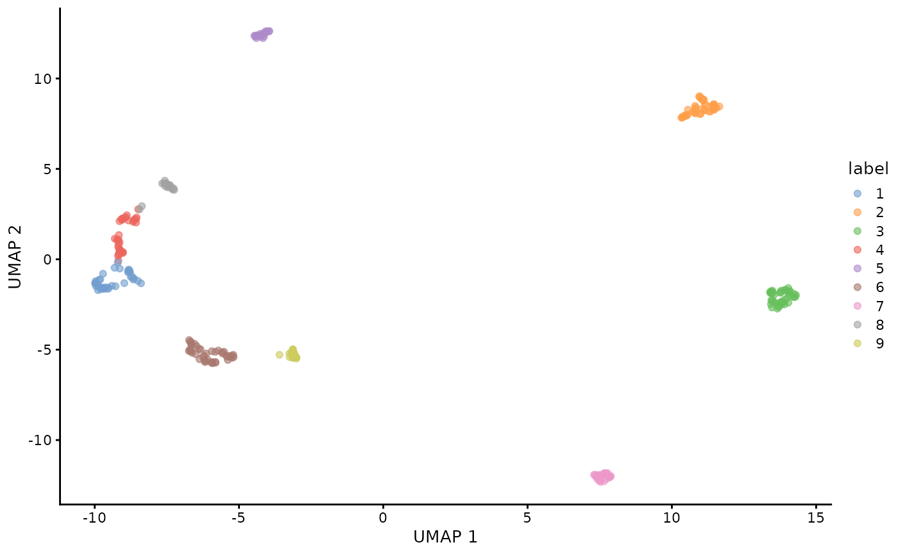
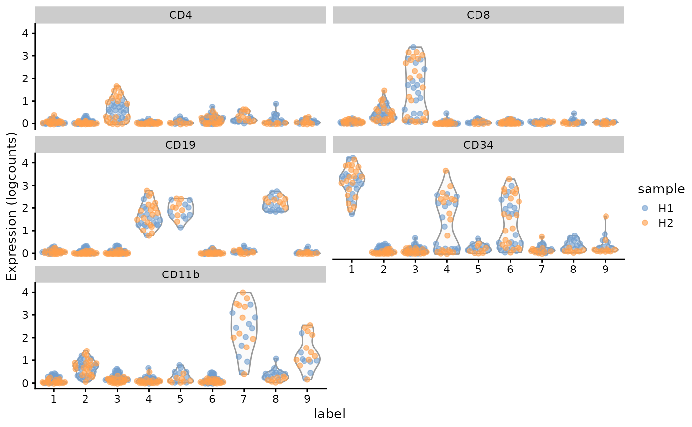
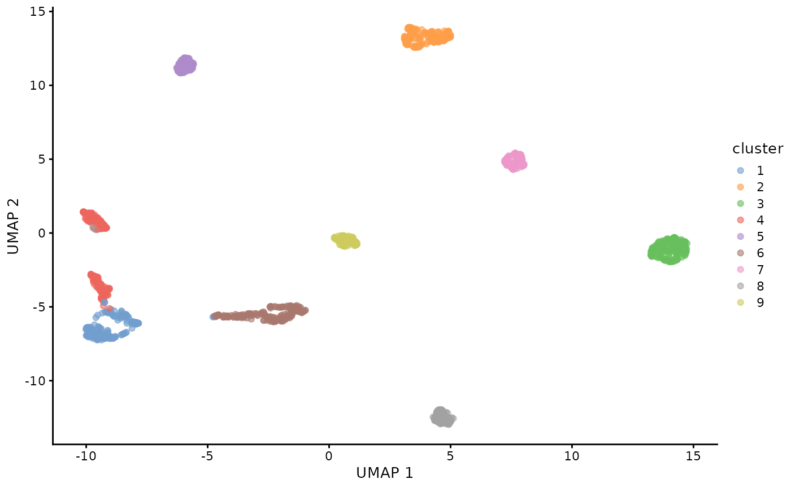
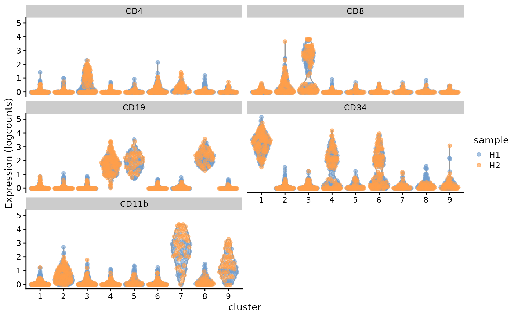

Interoperability with SingleCellExperiment
Givanna Putri
interoperability_with_sce.RmdIntroduction
This vignette demonstrates how to integrate SuperCellCyto results with cytometry data stored in SingleCellExperiment (SCE) objects, and how to analyse SuperCellCyto output using Bioconductor packages that take SCE objects as input.
We use a subsampled Levine_32dim dataset stored in an SCE object to illustrate how to create supercells and conduct downstream analyses.
library(SuperCellCyto)
library(qs)
library(scran)
library(BiocSingular)
library(scater)
library(bluster)
library(data.table)Preparing SCE object
We first load the subsampled Levine_32dim data, stored as a qs
using the qread function.
sce <- qread("data/Levine_32dim_sce_sub.qs")
sce
#> class: SingleCellExperiment
#> dim: 39 1400
#> metadata(0):
#> assays(1): counts
#> rownames(39): Time Cell_length ... file_number event_number
#> rowData names(3): channel_name marker_name marker_class
#> colnames(1400): cell_561 cell_321 ... cell_103890 cell_104094
#> colData names(3): population cell_id sample
#> reducedDimNames(0):
#> mainExpName: NULL
#> altExpNames(0):The data is stored in the counts assay. We will subset
it to include only markers we need to perform downstream analysis,
transform it using arcsinh transformation, and store the transformed
data in the logcounts assay.
markers <- c(
"CD45RA", "CD133", "CD19", "CD22", "CD11b", "CD4", "CD8", "CD34", "Flt3",
"CD20", "CXCR4", "CD235ab", "CD45", "CD123", "CD321", "CD14", "CD33", "CD47",
"CD11c", "CD7", "CD15", "CD16", "CD44", "CD38", "CD13", "CD3", "CD61", "CD117",
"CD49d", "HLA-DR", "CD64", "CD41"
)
# keep only the relevant markers
sce <- sce[markers,]
# to store arcsinh transformed data
exprs(sce) <- asinh(counts(sce) / 5)
sce
#> class: SingleCellExperiment
#> dim: 32 1400
#> metadata(0):
#> assays(2): counts logcounts
#> rownames(32): CD45RA CD133 ... CD64 CD41
#> rowData names(3): channel_name marker_name marker_class
#> colnames(1400): cell_561 cell_321 ... cell_103890 cell_104094
#> colData names(3): population cell_id sample
#> reducedDimNames(0):
#> mainExpName: NULL
#> altExpNames(0):Run SuperCellCyto
SuperCellCyto requires input data in a data.table
format. Therefore, we need to extract the arcsinh-transformed data into
a data.table object, and add the sample information and IDs
of the cells.
Note that SCE typically stores cells as columns and features as rows.
SuperCellCyto, conversely, requires cells as rows and features as
columns, a format typical for cytometry data where we typically have
more cells than features. Hence, we will transpose the extracted data
accordingly when creating the data.table object.
dt <- data.table(t(exprs(sce)))
dt$sample <- colData(sce)$sample
dt$cell_id <- colnames(sce)
supercells <- runSuperCellCyto(
dt = dt,
markers = markers,
sample_colname = "sample",
cell_id_colname = "cell_id",
gam = 5
)
head(supercells$supercell_expression_matrix)
#> CD45RA CD133 CD19 CD22 CD11b CD4
#> 1: 0.3527464 0.36965658 0.052225408 0.15136864 0.38488737 0.196023673
#> 2: 0.4041729 0.11507111 -0.006932994 0.14693022 0.31907116 -0.003634473
#> 3: 0.2887375 0.36023125 0.056967849 0.07522713 0.24452473 0.029621008
#> 4: 0.4649379 0.08945479 0.103484348 0.11839183 0.14487231 1.042568045
#> 5: 0.9805149 0.19259931 2.047843479 0.63399673 0.19205448 0.069494473
#> 6: 0.5039989 0.04109535 1.140960742 0.16492283 0.02102912 0.071198534
#> CD8 CD34 Flt3 CD20 CXCR4 CD235ab CD45
#> 1: 0.007764969 3.50239704 0.34908410 0.05885608 0.8318448 0.08275919 4.150848
#> 2: 0.398832012 0.03705595 0.08254384 0.11077190 0.1816196 0.23423737 4.807796
#> 3: 0.141084382 2.86064160 0.15894138 0.09338509 0.5989438 0.28179014 3.957416
#> 4: 0.071286889 0.10101316 0.29710281 0.03730981 1.2497923 0.67063325 5.886074
#> 5: 0.119244014 0.18210858 0.18761215 1.92656431 1.6019596 0.55462384 4.901840
#> 6: 0.004411946 0.11332847 0.18281316 0.16633969 0.5100604 0.28425575 2.570437
#> CD123 CD321 CD14 CD33 CD47 CD11c CD7
#> 1: 0.65958207 3.4777525 0.002602230 0.152636911 3.397630 0.5570696 0.12059033
#> 2: 0.01079346 0.7022473 0.040223896 -0.019154034 2.348988 0.3813772 3.63888594
#> 3: 0.68153776 3.1851073 0.015196514 0.117996726 2.756822 0.3060572 0.07848237
#> 4: 0.11592253 2.1491149 -0.007858091 -0.002039228 3.268248 0.2132838 1.08816761
#> 5: 0.62460814 2.2506667 0.075977004 0.514268184 3.562088 0.2269047 0.01379916
#> 6: 0.06874399 0.8415449 0.068690241 0.240470325 3.154016 0.4181508 0.07325880
#> CD15 CD16 CD44 CD38 CD13 CD3 CD61
#> 1: 0.63687911 0.195011598 4.262887 2.6031938 0.4192431 0.46531929 0.06761204
#> 2: 0.17664753 0.905724996 1.632231 2.8565129 0.2514765 0.27068380 0.25558748
#> 3: 0.44514407 0.026423501 2.874195 1.9066412 0.4908399 0.24716531 0.17950440
#> 4: 0.08441551 0.004227474 3.640311 0.5495787 0.2311405 5.36168058 0.39291676
#> 5: 0.14494562 0.252655577 2.822493 5.0658843 0.5187125 0.33558106 0.19615231
#> 6: 0.30214595 0.281831160 3.819350 5.8639208 1.0289835 0.07946019 0.08158021
#> CD117 CD49d HLA-DR CD64 CD41 sample
#> 1: 1.19031991 1.3604618 2.75321307 0.16150006 0.18985821 H1
#> 2: 0.06541793 0.4496903 0.14374144 0.18547915 0.06282481 H1
#> 3: 0.83249351 0.9205626 2.58482319 0.20073796 0.21266848 H1
#> 4: 0.29209802 0.4707183 0.17818566 0.04568237 0.07765066 H1
#> 5: 0.10129956 1.3608945 2.20287695 0.09954007 0.17256851 H1
#> 6: -0.01764885 1.4263210 0.07484084 0.06353135 0.06840618 H1
#> SuperCellId
#> 1: SuperCell_1_Sample_H1
#> 2: SuperCell_2_Sample_H1
#> 3: SuperCell_3_Sample_H1
#> 4: SuperCell_4_Sample_H1
#> 5: SuperCell_5_Sample_H1
#> 6: SuperCell_6_Sample_H1We can now embed the supercell ID in the colData of our
SCE object.
colData(sce)$supercell_id <- factor(supercells$supercell_cell_map$SuperCellID)
head(colData(sce))
#> DataFrame with 6 rows and 4 columns
#> population cell_id sample supercell_id
#> <factor> <character> <factor> <factor>
#> cell_561 Basophils cell_561 H1 SuperCell_94_Sample_H1
#> cell_321 Basophils cell_321 H1 SuperCell_51_Sample_H1
#> cell_153 Basophils cell_153 H1 SuperCell_29_Sample_H1
#> cell_74 Basophils cell_74 H1 SuperCell_51_Sample_H1
#> cell_228 Basophils cell_228 H1 SuperCell_51_Sample_H1
#> cell_146 Basophils cell_146 H1 SuperCell_25_Sample_H1Analyse Supercells as SCE object
As the number of supercells is less than the number of cells in our SCE object, we store the supercell expression matrix as a separate SCE object. This then allows us to use Bioconductor packages to analyse our supercells.
supercell_sce <- SingleCellExperiment(
list(logcounts=t(supercells$supercell_expression_matrix[, markers, with=FALSE])),
colData = DataFrame(
SuperCellId=supercells$supercell_expression_matrix$SuperCellId,
sample=supercells$supercell_expression_matrix$sample
)
)
colnames(supercell_sce) <- colData(supercell_sce)$SuperCellId
supercell_sce
#> class: SingleCellExperiment
#> dim: 32 280
#> metadata(0):
#> assays(1): logcounts
#> rownames(32): CD45RA CD133 ... CD64 CD41
#> rowData names(0):
#> colnames(280): SuperCell_1_Sample_H1 SuperCell_2_Sample_H1 ...
#> SuperCell_139_Sample_H2 SuperCell_140_Sample_H2
#> colData names(2): SuperCellId sample
#> reducedDimNames(0):
#> mainExpName: NULL
#> altExpNames(0):The code above essentially transpose the supercell expression matrix,
making supercells columns and markers rows, and store it in the
logcounts assay of our new SCE object. We also populate the
colData with SuperCellId and the sample name for each
supercell.
With the supercell expression matrix now in an SCE format, we can perform downstream analyses such as clustering and and drawing UMAP plots using Bioconductor packages.
set.seed(42)
supercell_sce <- fixedPCA(supercell_sce, rank = 10, subset.row = NULL, BSPARAM=RandomParam())
supercell_sce <- runUMAP(supercell_sce, dimred="PCA")
clusters <- clusterCells(
supercell_sce, use.dimred = "PCA",
BLUSPARAM = SNNGraphParam(cluster.fun = "leiden")
)
colLabels(supercell_sce) <- clusters
plotReducedDim(supercell_sce, dimred="UMAP", colour_by="label")
Any functions which operate on SCE object should work. For example,
we can use plotExpression in scater package to
create violin plots of the markers against clusters.
plotExpression(supercell_sce, c("CD4", "CD8", "CD19", "CD34", "CD11b"),
x = "label", colour_by = "sample")
Transfer information from supercells SCE object to single cell SCE object
To transfer analysis results (e.g., clusters) from the supercell SCE object back to the single-cell SCE object, we need to do some data wrangling. It is vital to ensure that the order of the analysis results (e.g., clusters) aligns with the cell order in the SCE object.
Using the cluster information as an example, we need to first extract
the colData of the SCE objects into two separate
data.table objects. We then use
merge.data.table to match and merge them using the
supercell ID as the common identifiers. Make sure you set the
sort parameter to FALSE and set x to the
colData of your single cell SCE object. This ensures that
the order of the resulting data.table aligns with the order
of the colData of our single-cell SCE object.
cell_id_sce <- data.table(as.data.frame(colData(sce)))
supercell_cluster <- data.table(as.data.frame(colData(supercell_sce)))
cell_id_sce_with_clusters <- merge.data.table(
x = cell_id_sce,
y = supercell_cluster,
by.x = "supercell_id",
by.y = "SuperCellId",
sort = FALSE
)Finally, we can then add the cluster assignment as a column in the
colData of our single-cell SCE object.
colData(sce)$cluster <- cell_id_sce_with_clusters$labelVisualise them as UMAP plot.
sce <- fixedPCA(sce, rank = 10, subset.row = NULL, BSPARAM=RandomParam())
sce <- runUMAP(sce, dimred="PCA")
plotReducedDim(sce, dimred="UMAP", colour_by="cluster")
Or violin plot to see the distribution of their marker expressions.
plotExpression(sce, c("CD4", "CD8", "CD19", "CD34", "CD11b"),
x = "cluster", colour_by = "sample")
Session information
sessionInfo()
#> R version 4.3.2 (2023-10-31)
#> Platform: x86_64-pc-linux-gnu (64-bit)
#> Running under: Ubuntu 22.04.3 LTS
#>
#> Matrix products: default
#> BLAS: /usr/lib/x86_64-linux-gnu/openblas-pthread/libblas.so.3
#> LAPACK: /usr/lib/x86_64-linux-gnu/openblas-pthread/libopenblasp-r0.3.20.so; LAPACK version 3.10.0
#>
#> locale:
#> [1] LC_CTYPE=C.UTF-8 LC_NUMERIC=C LC_TIME=C.UTF-8
#> [4] LC_COLLATE=C.UTF-8 LC_MONETARY=C.UTF-8 LC_MESSAGES=C.UTF-8
#> [7] LC_PAPER=C.UTF-8 LC_NAME=C LC_ADDRESS=C
#> [10] LC_TELEPHONE=C LC_MEASUREMENT=C.UTF-8 LC_IDENTIFICATION=C
#>
#> time zone: UTC
#> tzcode source: system (glibc)
#>
#> attached base packages:
#> [1] stats4 stats graphics grDevices utils datasets methods
#> [8] base
#>
#> other attached packages:
#> [1] data.table_1.14.10 bluster_1.12.0
#> [3] scater_1.30.1 ggplot2_3.4.4
#> [5] BiocSingular_1.18.0 scran_1.30.2
#> [7] scuttle_1.12.0 SingleCellExperiment_1.24.0
#> [9] SummarizedExperiment_1.32.0 Biobase_2.62.0
#> [11] GenomicRanges_1.54.1 GenomeInfoDb_1.38.5
#> [13] IRanges_2.36.0 S4Vectors_0.40.2
#> [15] BiocGenerics_0.48.1 MatrixGenerics_1.14.0
#> [17] matrixStats_1.2.0 qs_0.25.7
#> [19] SuperCellCyto_0.1.0
#>
#> loaded via a namespace (and not attached):
#> [1] bitops_1.0-7 gridExtra_2.3
#> [3] rlang_1.1.3 magrittr_2.0.3
#> [5] compiler_4.3.2 DelayedMatrixStats_1.24.0
#> [7] systemfonts_1.0.5 vctrs_0.6.5
#> [9] stringr_1.5.1 pkgconfig_2.0.3
#> [11] crayon_1.5.2 fastmap_1.1.1
#> [13] XVector_0.42.0 labeling_0.4.3
#> [15] SuperCell_1.0 utf8_1.2.4
#> [17] rmarkdown_2.25 ggbeeswarm_0.7.2
#> [19] ragg_1.2.7 purrr_1.0.2
#> [21] xfun_0.41 zlibbioc_1.48.0
#> [23] cachem_1.0.8 beachmat_2.18.0
#> [25] jsonlite_1.8.8 highr_0.10
#> [27] DelayedArray_0.28.0 BiocParallel_1.36.0
#> [29] irlba_2.3.5.1 parallel_4.3.2
#> [31] cluster_2.1.4 R6_2.5.1
#> [33] bslib_0.6.1 stringi_1.8.3
#> [35] limma_3.58.1 jquerylib_0.1.4
#> [37] Rcpp_1.0.12 knitr_1.45
#> [39] FNN_1.1.4 Matrix_1.6-5
#> [41] igraph_1.6.0 tidyselect_1.2.0
#> [43] abind_1.4-5 yaml_2.3.8
#> [45] viridis_0.6.4 stringfish_0.16.0
#> [47] codetools_0.2-19 plyr_1.8.9
#> [49] lattice_0.21-9 tibble_3.2.1
#> [51] withr_3.0.0 evaluate_0.23
#> [53] desc_1.4.3 RcppParallel_5.1.7
#> [55] pillar_1.9.0 generics_0.1.3
#> [57] RCurl_1.98-1.14 sparseMatrixStats_1.14.0
#> [59] munsell_0.5.0 scales_1.3.0
#> [61] RApiSerialize_0.1.2 glue_1.7.0
#> [63] metapod_1.10.1 tools_4.3.2
#> [65] BiocNeighbors_1.20.2 ScaledMatrix_1.10.0
#> [67] locfit_1.5-9.8 RANN_2.6.1
#> [69] fs_1.6.3 cowplot_1.1.3
#> [71] grid_4.3.2 edgeR_4.0.12
#> [73] colorspace_2.1-0 GenomeInfoDbData_1.2.11
#> [75] beeswarm_0.4.0 vipor_0.4.7
#> [77] cli_3.6.2 rsvd_1.0.5
#> [79] textshaping_0.3.7 fansi_1.0.6
#> [81] viridisLite_0.4.2 S4Arrays_1.2.0
#> [83] dplyr_1.1.4 uwot_0.1.16
#> [85] gtable_0.3.4 sass_0.4.8
#> [87] digest_0.6.34 SparseArray_1.2.3
#> [89] ggrepel_0.9.5 dqrng_0.3.2
#> [91] farver_2.1.1 memoise_2.0.1
#> [93] htmltools_0.5.7 pkgdown_2.0.7
#> [95] lifecycle_1.0.4 statmod_1.5.0